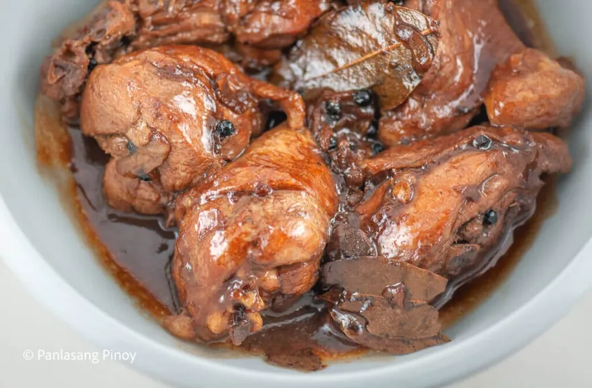
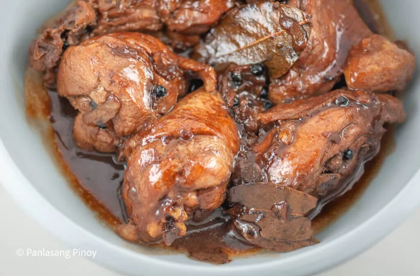
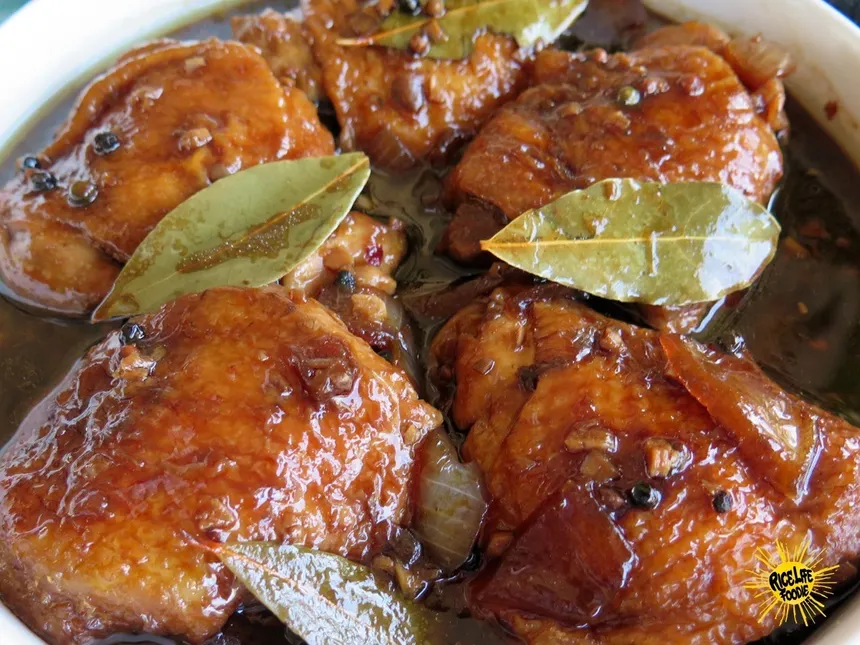
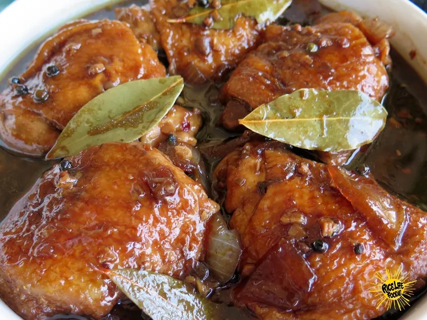

Chicken Adobo
A classic Filipino dish — tangy, savory, and simple to make.
 

 

Ingredients
- 1 kg chicken, cut into pieces
- 1/2 cup soy sauce
- 1/2 cup vinegar
- 6 cloves garlic, smashed
- 2 bay leaves
- 1 tsp whole peppercorns
- 1 tbsp oil
- Salt to taste
Procedure
- Marinate the chicken with soy sauce and garlic for 20–30 minutes.
- Heat oil in a pan and brown the chicken pieces on both sides.
- Add vinegar, bay leaves, peppercorns and a little water. Do not stir until the vinegar boils.
- Simmer on low heat, cover, for 25–30 minutes until chicken is tender.
- Uncover and reduce sauce to thicken; adjust salt as needed. Serve with rice.